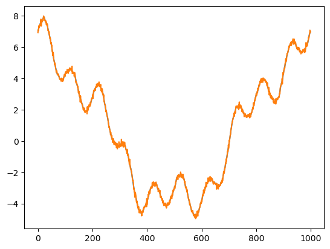

Discrete Fourier Transform#
import numpy as np
from matplotlib import pyplot as plt
def fourier(y, number_of_harmonics):
x = np.matrix(np.arange(0,np.size(y)))/np.size(y)*2*3.14159
#
#print(x)
n = np.matrix(np.arange(0,number_of_harmonics))
omega = x.T.dot(n)
cos_coef = np.matrix(y).dot(np.cos(omega))
sin_coef = np.matrix(y).dot(np.sin(omega))
cos_coef = cos_coef/np.size(y)*2
sin_coef = sin_coef/np.size(y)*2
cos_coef[0,0] = cos_coef[0,0]/2
reconstruct = cos_coef.dot(np.cos(omega).T)+sin_coef.dot(np.sin(omega).T)
return cos_coef,sin_coef, reconstruct, omega
x = np.linspace(0,2*3.14159,1000)
y = 1*np.cos(0*x)+5*np.cos(x)+np.cos(4*x)+np.sin(10*x)+np.random.normal(0,0.1,1000)
plt.plot(y)
wave_number = 100
cos_coef,sin_coef,reconstruct, omega = fourier(y,wave_number)
plt.figure()
plt.contourf(np.cos(omega))
# plt.scatter(np.arange(0,wave_number),np.array(cos_coef),s=40)
# plt.scatter(np.arange(0,wave_number),np.array(sin_coef),s=40)
plt.figure()
plt.plot(reconstruct[0,:].T)
plt.plot(y)
print('cos coef=',cos_coef)
print('sin coef=',sin_coef)
plt.figure()
plt.plot(cos_coef)
cos coef= [[ 1.00150291e+00 5.00308538e+00 3.62946863e-03 9.45913047e-03
9.95129094e-01 -5.40651675e-03 2.11743520e-03 -1.50539116e-03
3.71404612e-03 1.57954870e-03 3.41219896e-02 -1.00249049e-02
2.82968789e-04 -5.34838914e-04 3.08993552e-03 1.53923489e-03
-3.40786776e-03 2.20891652e-03 4.66700780e-05 1.37983095e-04
-6.23457146e-03 3.37160095e-03 -9.59848386e-04 1.22147640e-03
-6.04105505e-03 3.94831567e-03 -1.99214757e-03 -4.65395595e-03
3.43501096e-03 6.13223937e-03 7.30806249e-03 6.11499398e-03
2.04105517e-03 -4.59683941e-03 -3.79452719e-03 5.39341707e-03
1.68999438e-03 -3.86096007e-05 9.18702371e-03 1.35786032e-02
-3.33730506e-03 1.84279126e-03 -1.29393907e-03 5.79965037e-03
6.91660878e-03 -6.30704326e-03 -3.78308655e-03 2.96857081e-03
-2.25588703e-04 1.30506753e-02 1.94540511e-04 6.31900585e-03
-2.45012903e-03 1.16926062e-03 -3.03040120e-03 1.54725395e-03
-3.10005808e-03 -6.52105367e-03 5.73864249e-04 -2.77350816e-04
-4.05172063e-03 -3.35784818e-03 -1.18363864e-03 3.42474428e-03
4.66125079e-04 -2.20940953e-03 4.41117948e-03 3.27465483e-03
-9.21017318e-03 3.08394449e-03 8.47090066e-04 -4.04242845e-03
2.16634398e-03 -5.53042879e-03 -1.20293291e-03 1.07088705e-03
-3.47919454e-03 -3.05810073e-03 -7.74423336e-03 -3.58740896e-03
-5.79652233e-05 3.01015031e-03 -6.80062685e-04 -1.95598288e-03
1.15752241e-03 -5.50109555e-03 -2.68690845e-03 -7.15821329e-03
7.02262863e-03 -4.01228247e-03 -9.20087558e-05 7.30779725e-03
3.74955687e-03 -5.28387316e-03 1.91786068e-03 -2.89255866e-03
-3.88879925e-03 3.10370324e-03 -2.12938750e-03 2.62539186e-03]]
sin coef= [[ 0.00000000e+00 -1.59922683e-02 -7.98120857e-03 4.51747548e-04
-1.26955884e-02 6.81586961e-03 9.18165635e-04 5.18200321e-04
1.05813600e-02 9.50605416e-03 9.99449786e-01 -5.66345420e-03
-6.69777212e-03 -3.31983982e-03 -3.95173448e-03 5.92703176e-03
-4.10839208e-03 3.45503952e-04 -5.49805173e-03 2.54493272e-03
-7.73606950e-03 2.08847334e-04 2.81776907e-03 -4.60233826e-04
6.71604578e-04 -6.57394182e-03 1.28708623e-04 1.47354006e-03
9.72512664e-05 2.68648432e-03 2.66577641e-03 -3.16297514e-03
-4.60704316e-04 -2.09813547e-03 5.46400792e-03 -1.20739537e-02
-7.10306565e-03 -4.65123645e-03 -3.44144774e-03 -4.67812786e-03
1.59308828e-03 -4.05382529e-03 5.43112498e-03 -4.72415091e-04
6.00799967e-03 -4.11595061e-04 -1.98451417e-03 5.99536095e-03
-2.61553688e-03 -8.39484494e-03 -1.04607596e-03 1.03905388e-03
7.78282817e-05 2.81033420e-04 2.78058667e-03 1.99931120e-03
-2.62220373e-03 -8.33731477e-04 -5.61094660e-03 1.47810694e-03
5.41778245e-03 5.60159930e-03 7.26892421e-03 1.89458105e-03
4.05425432e-03 4.55439047e-03 -1.07053795e-02 -4.86641452e-03
5.33840113e-03 3.40991584e-03 2.67016145e-03 -2.35710131e-03
-3.08259329e-03 -1.36200338e-03 -6.50739754e-03 -8.43421095e-03
-4.11252122e-03 -7.77239847e-04 -8.50457844e-03 2.54196874e-04
-1.12840342e-02 -3.40094821e-03 -4.59152255e-03 3.82680056e-03
-4.35192830e-03 1.39549956e-03 -3.50196291e-03 -1.60766264e-03
-5.34484642e-04 -3.65983515e-03 -1.34957044e-03 2.64428442e-03
-4.90436870e-03 -7.95858328e-04 -8.87958312e-03 4.93200566e-03
4.13669417e-04 2.26169540e-03 1.30337284e-02 8.99536283e-03]]
[<matplotlib.lines.Line2D at 0x116b3a9d0>,
<matplotlib.lines.Line2D at 0x116b3aaf0>,
<matplotlib.lines.Line2D at 0x116b3ac10>,
<matplotlib.lines.Line2D at 0x116b3ad30>,
<matplotlib.lines.Line2D at 0x116b3ae50>,
<matplotlib.lines.Line2D at 0x116b3af70>,
<matplotlib.lines.Line2D at 0x116b3a970>,
<matplotlib.lines.Line2D at 0x116b471f0>,
<matplotlib.lines.Line2D at 0x116b47310>,
<matplotlib.lines.Line2D at 0x116b47430>,
<matplotlib.lines.Line2D at 0x116b47550>,
<matplotlib.lines.Line2D at 0x116b47670>,
<matplotlib.lines.Line2D at 0x116b47790>,
<matplotlib.lines.Line2D at 0x116b478b0>,
<matplotlib.lines.Line2D at 0x116b479d0>,
<matplotlib.lines.Line2D at 0x116b47af0>,
<matplotlib.lines.Line2D at 0x116b47c10>,
<matplotlib.lines.Line2D at 0x116b47d30>,
<matplotlib.lines.Line2D at 0x116b47e50>,
<matplotlib.lines.Line2D at 0x116b47f70>,
<matplotlib.lines.Line2D at 0x116b470d0>,
<matplotlib.lines.Line2D at 0x116b4e1f0>,
<matplotlib.lines.Line2D at 0x116b4e310>,
<matplotlib.lines.Line2D at 0x116b4e430>,
<matplotlib.lines.Line2D at 0x116b4e550>,
<matplotlib.lines.Line2D at 0x116b4e670>,
<matplotlib.lines.Line2D at 0x116b4e790>,
<matplotlib.lines.Line2D at 0x116b4e8b0>,
<matplotlib.lines.Line2D at 0x116b4e9d0>,
<matplotlib.lines.Line2D at 0x116b4eaf0>,
<matplotlib.lines.Line2D at 0x116b4ec10>,
<matplotlib.lines.Line2D at 0x116b4ed30>,
<matplotlib.lines.Line2D at 0x116b4ee50>,
<matplotlib.lines.Line2D at 0x116b4ef70>,
<matplotlib.lines.Line2D at 0x116b4e0d0>,
<matplotlib.lines.Line2D at 0x116c7c1f0>,
<matplotlib.lines.Line2D at 0x116c7c310>,
<matplotlib.lines.Line2D at 0x116c7c430>,
<matplotlib.lines.Line2D at 0x116c7c550>,
<matplotlib.lines.Line2D at 0x116c7c670>,
<matplotlib.lines.Line2D at 0x116c7c790>,
<matplotlib.lines.Line2D at 0x116c7c8b0>,
<matplotlib.lines.Line2D at 0x116c7c9d0>,
<matplotlib.lines.Line2D at 0x116c7caf0>,
<matplotlib.lines.Line2D at 0x116c7cc10>,
<matplotlib.lines.Line2D at 0x116b2b940>,
<matplotlib.lines.Line2D at 0x116b2b910>,
<matplotlib.lines.Line2D at 0x116c7ce50>,
<matplotlib.lines.Line2D at 0x116c7cf70>,
<matplotlib.lines.Line2D at 0x116c7cd30>,
<matplotlib.lines.Line2D at 0x116c851f0>,
<matplotlib.lines.Line2D at 0x116c85310>,
<matplotlib.lines.Line2D at 0x116c85430>,
<matplotlib.lines.Line2D at 0x116c85550>,
<matplotlib.lines.Line2D at 0x116c85670>,
<matplotlib.lines.Line2D at 0x116c85790>,
<matplotlib.lines.Line2D at 0x116c858b0>,
<matplotlib.lines.Line2D at 0x116c859d0>,
<matplotlib.lines.Line2D at 0x116c85af0>,
<matplotlib.lines.Line2D at 0x116c85c10>,
<matplotlib.lines.Line2D at 0x116c85d30>,
<matplotlib.lines.Line2D at 0x116c85e50>,
<matplotlib.lines.Line2D at 0x116c85f70>,
<matplotlib.lines.Line2D at 0x116c850d0>,
<matplotlib.lines.Line2D at 0x116c8d1f0>,
<matplotlib.lines.Line2D at 0x116c8d310>,
<matplotlib.lines.Line2D at 0x116c8d430>,
<matplotlib.lines.Line2D at 0x116c8d550>,
<matplotlib.lines.Line2D at 0x116c8d670>,
<matplotlib.lines.Line2D at 0x116c8d790>,
<matplotlib.lines.Line2D at 0x116c8d8b0>,
<matplotlib.lines.Line2D at 0x116c8d9d0>,
<matplotlib.lines.Line2D at 0x116c8daf0>,
<matplotlib.lines.Line2D at 0x116c8dc10>,
<matplotlib.lines.Line2D at 0x116c8dd30>,
<matplotlib.lines.Line2D at 0x116c8de50>,
<matplotlib.lines.Line2D at 0x116c8df70>,
<matplotlib.lines.Line2D at 0x116c8d0d0>,
<matplotlib.lines.Line2D at 0x116c931f0>,
<matplotlib.lines.Line2D at 0x116c93310>,
<matplotlib.lines.Line2D at 0x116c93430>,
<matplotlib.lines.Line2D at 0x116c93550>,
<matplotlib.lines.Line2D at 0x116c93670>,
<matplotlib.lines.Line2D at 0x116c93790>,
<matplotlib.lines.Line2D at 0x116c93880>,
<matplotlib.lines.Line2D at 0x116c939a0>,
<matplotlib.lines.Line2D at 0x116c93ac0>,
<matplotlib.lines.Line2D at 0x116c93be0>,
<matplotlib.lines.Line2D at 0x116c93d00>,
<matplotlib.lines.Line2D at 0x116c93e20>,
<matplotlib.lines.Line2D at 0x116c93f40>,
<matplotlib.lines.Line2D at 0x116c930d0>,
<matplotlib.lines.Line2D at 0x116c9b1c0>,
<matplotlib.lines.Line2D at 0x116c9b2e0>,
<matplotlib.lines.Line2D at 0x116c9b400>,
<matplotlib.lines.Line2D at 0x116c9b520>,
<matplotlib.lines.Line2D at 0x116c9b640>,
<matplotlib.lines.Line2D at 0x116c9b760>,
<matplotlib.lines.Line2D at 0x116c9b880>,
<matplotlib.lines.Line2D at 0x116c9b9a0>]


def dft(y):
y = np.asarray(y, dtype=float)
N = y.shape[0]
n = np.arange(N)
k = n.reshape((N, 1))
M = np.exp(-2j * np.pi * k * n / N)
return np.dot(M, y)/np.size(y)
plt.plot(dft(y))
y_hat = np.matrix(dft(y))
print(y_hat.dot((y_hat.conjugate()).T))
print(np.var(y))
[[14.52370077+0.j]]
13.520692695619823
/Users/Shared/miniconda3/envs/jupyterbook/lib/python3.9/site-packages/matplotlib/cbook.py:1762: ComplexWarning: Casting complex values to real discards the imaginary part
return math.isfinite(val)
/Users/Shared/miniconda3/envs/jupyterbook/lib/python3.9/site-packages/matplotlib/cbook.py:1398: ComplexWarning: Casting complex values to real discards the imaginary part
return np.asarray(x, float)
Gibbs phenomenon#
y = np.cos(0*x)+5*np.cos(x)+np.cos(4*x)+np.sin(10*x)
plt.plot(dft(y)[0:10],'k')
# maskout the data by half
y[0:500] = 0
plt.plot(dft(y)[0:10]*2)
[<matplotlib.lines.Line2D at 0x11728ebe0>]

Fast Fourier Transform#
import numpy as np
def fft(x):
N = len(x)
if N <= 1:
return x
even = fft(x[0::2])
odd = fft(x[1::2])
T = [np.exp(-2j * np.pi * k / N) * odd[k] for k in range(N // 2)]
return [even[k] + T[k] for k in range(N // 2)] + \
[even[k] - T[k] for k in range(N // 2)]
def fft_recursive(x):
N = len(x)
if N % 2 > 0:
raise ValueError("Length of input must be a power of 2")
elif N <= 32:
return fft(x)
else:
even = fft_recursive(x[0::2])
odd = fft_recursive(x[1::2])
T = [np.exp(-2j * np.pi * k / N) * odd[k] for k in range(N // 2)]
return [even[k] + T[k] for k in range(N // 2)] + \
[even[k] - T[k] for k in range(N // 2)]
def main():
x = np.random.random(1024)
#print("Input sequence:", x)
y = fft_recursive(x)
#print("FFT result:", y)
if __name__ == "__main__":
main()
def FFT(x):
"""
A recursive implementation of
the 1D Cooley-Tukey FFT, the
input should have a length of
power of 2.
"""
N = len(x)
if N == 1:
return x
else:
X_even = FFT(x[::2])
X_odd = FFT(x[1::2])
factor = np.exp(-2j*np.pi*np.arange(N)/ N)
X = np.concatenate(\
[X_even+factor[:int(N/2)]*X_odd,
X_even+factor[int(N/2):]*X_odd])
return X
# sampling rate
sr = 128
# sampling interval
ts = 1.0/sr
t = np.arange(0,1,ts)
freq = 1.
x = 3*np.sin(2*np.pi*freq*t)
freq = 4
x += np.sin(2*np.pi*freq*t)
freq = 7
x += 0.5* np.sin(2*np.pi*freq*t)
plt.figure(figsize = (8, 6))
plt.plot(t, x, 'r')
plt.ylabel('Amplitude')
plt.show()

%timeit X=FFT(x)
%timeit dft(x)
# calculate the frequency
N = len(X)
n = np.arange(N)
T = N/sr
freq = n/T
plt.figure(figsize = (12, 6))
plt.subplot(121)
plt.stem(freq, abs(X), 'b', \
markerfmt=" ", basefmt="-b")
plt.xlabel('Freq (Hz)')
plt.ylabel('FFT Amplitude |X(freq)|')
# Get the one-sided specturm
n_oneside = N//2
# get the one side frequency
f_oneside = freq[:n_oneside]
# normalize the amplitude
X_oneside =X[:n_oneside]/n_oneside
plt.subplot(122)
plt.stem(f_oneside, abs(X_oneside), 'b', \
markerfmt=" ", basefmt="-b")
plt.xlabel('Freq (Hz)')
plt.ylabel('Normalized FFT Amplitude |X(freq)|')
plt.tight_layout()
plt.show()
600 µs ± 3.59 µs per loop (mean ± std. dev. of 7 runs, 1,000 loops each)
363 µs ± 2.57 µs per loop (mean ± std. dev. of 7 runs, 1,000 loops each)
---------------------------------------------------------------------------
NameError Traceback (most recent call last)
Cell In[7], line 4
2 get_ipython().run_line_magic('timeit', 'dft(x)')
3 # calculate the frequency
----> 4 N = len(X)
5 n = np.arange(N)
6 T = N/sr
NameError: name 'X' is not defined
import numpy as np
def fft(x):
N = len(x)
if N <= 1:
return x
even = fft(x[::2])
odd = fft(x[1::2])
T = [np.exp(-2j * np.pi * k / N) * odd[k] for k in range(N // 2)]
return [even[k] + T[k] for k in range(N // 2)] + \
[even[k] - T[k] for k in range(N // 2)]
import numpy as np
import matplotlib.pyplot as plt
# Generate a sinusoidal signal with noise
t = np.linspace(0, 1, 1000)
f_signal = 5 # Frequency of the signal
signal = np.sin(2 * np.pi * f_signal * t) + 0.5 * np.random.randn(1000) # Adding noise
# Compute FFT
fft_result = np.fft.fft(signal)
frequencies = np.fft.fftfreq(len(signal), t[1] - t[0])
# Plot the original signal
plt.figure(figsize=(10, 6))
plt.subplot(2, 1, 1)
plt.plot(t, signal)
plt.title('Original Signal')
plt.xlabel('Time')
plt.ylabel('Amplitude')
# Plot the FFT result (scaled properly)
plt.subplot(2, 1, 2)
plt.plot(frequencies, np.abs(fft_result) / len(signal)) # Normalize FFT by the length of the signal
plt.title('FFT of Signal')
plt.xlabel('Frequency')
plt.ylabel('Magnitude')
plt.xlim(0, 10) # Limiting x-axis to frequencies up to 10 Hz for clarity
plt.tight_layout()
plt.show()